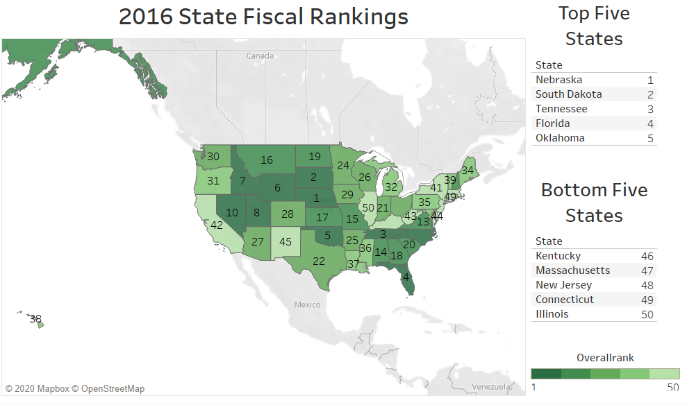

The original did a good job of having a map layout and labeling the ranks for each state. It also made a list of the top and bottom five states.
However, the use of colors did not effectively correspond with rank. Furthermore, the most recent year in the spreadsheet is 2016, where the graphic says 2018.
The dataset includes many metrics, but does not accurately explain what they represent, nor how they are used to calculate "Overall Rank". I changed the color scale to a single color with 5 steps.
*Note...I have no intention of creating a twitter account or tweeting. No assistance was offered in the discussion forum for an alternative.